plain
Flat surfaces, one hairline per seam, page tone throughout. The baseline you get with the glass merely deleted.
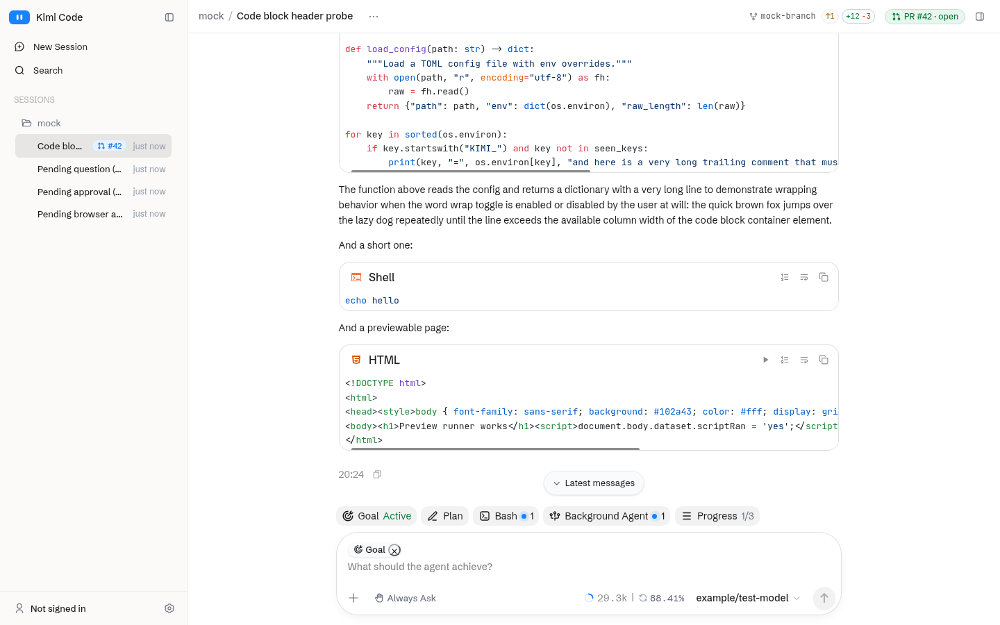
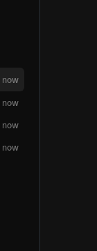
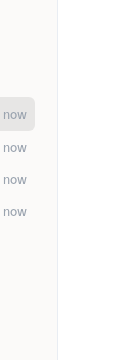
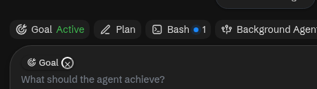

The liquid glass system is gone. This is what can replace it. Every shot is the real app built from the current source, served with fixtures, at 1440×900. Nothing here uses a filter.
?catalogue=surface to your kimi web URL and flip them on the real page, with content and scrolling.The three axes are independent. This one decides the panels, cards, menus and chrome. The strips below are the same crop cut from each candidate, in the same order, so the five sit side by side at 1:1.
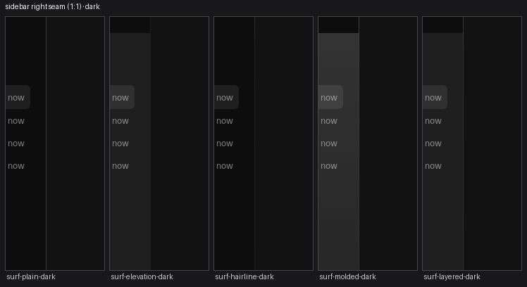
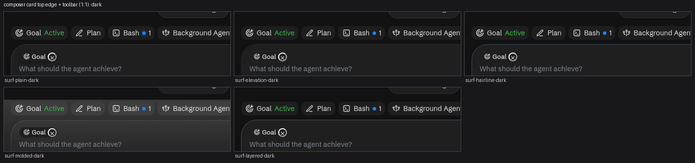
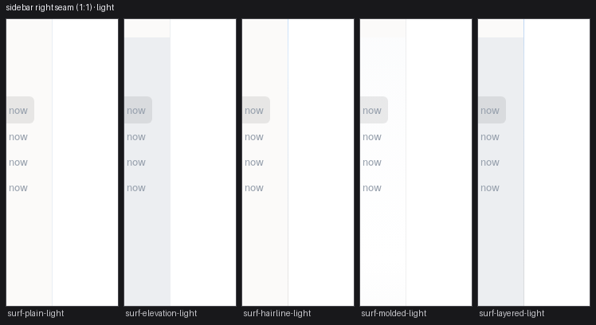
Flat surfaces, one hairline per seam, page tone throughout. The baseline you get with the glass merely deleted.




Chrome columns take the surface tone; borders give way to a contact shadow, a lift and a 1px ring.
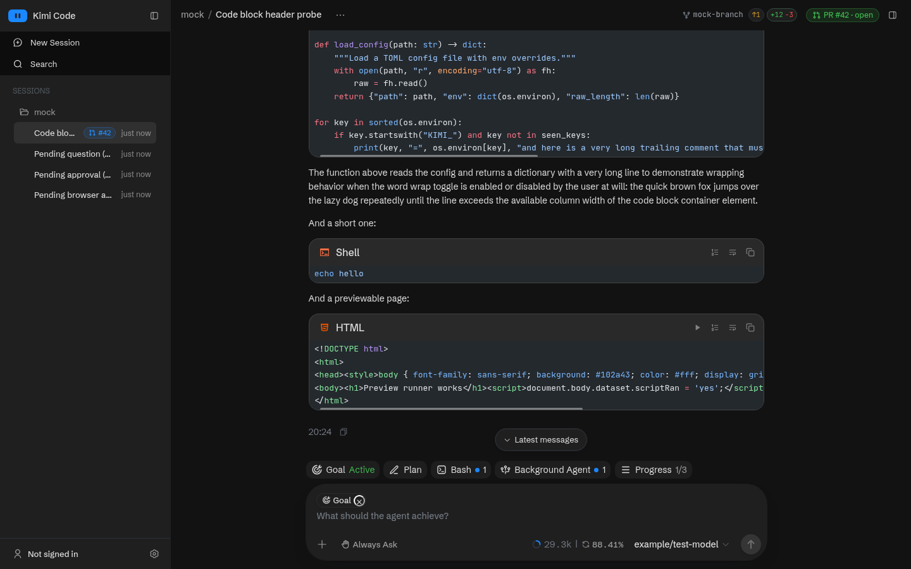
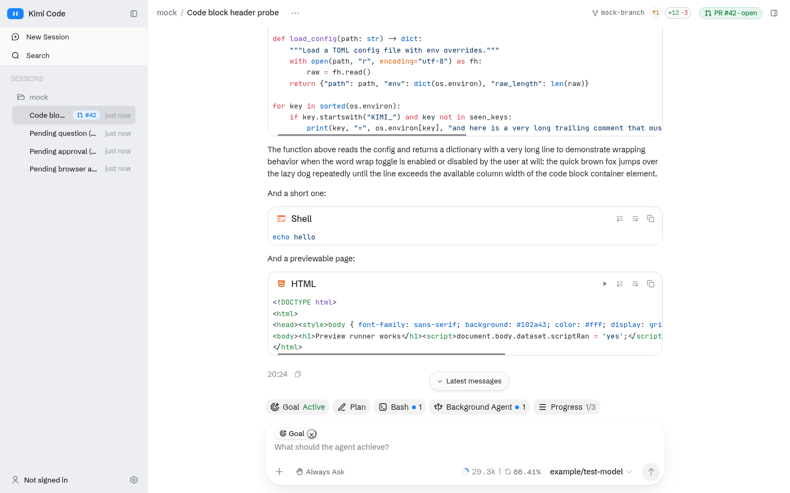
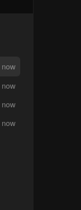
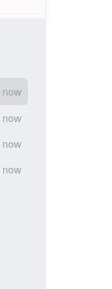
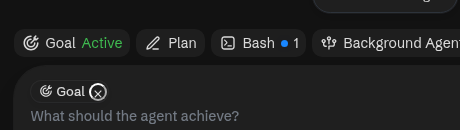
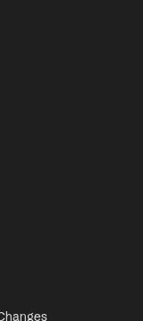
Keeps the page tone. Only the seams move: the brand blue at the top of each edge, fading into the neutral line.
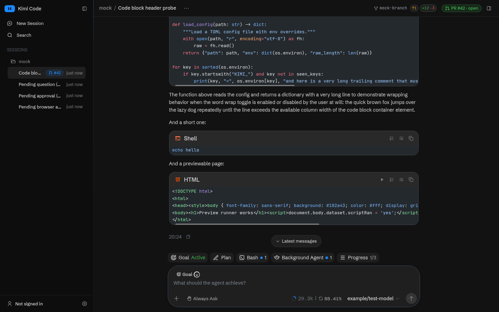
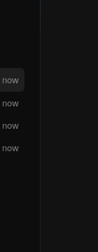
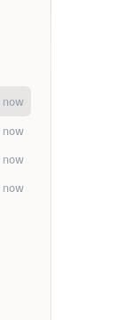
A physical face. Shallow vertical gradient, lit top edge and shaded bottom edge baked in as inset shadows.
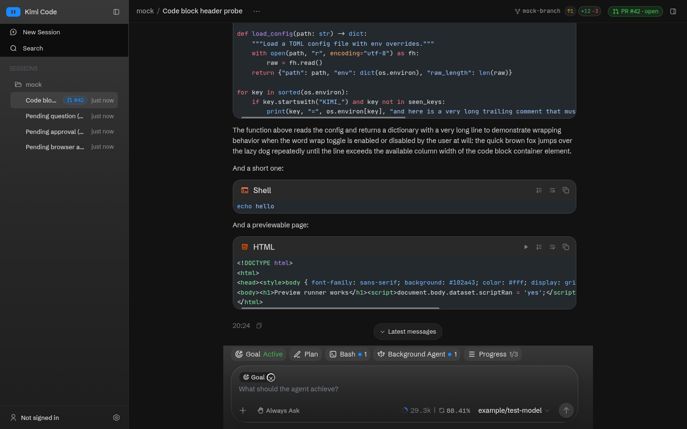
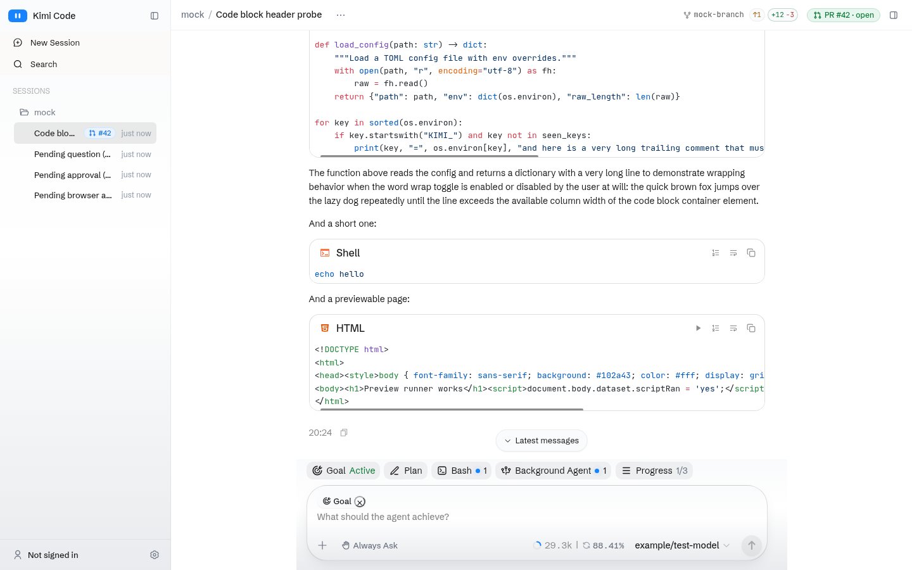
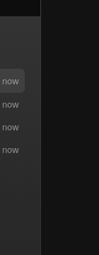
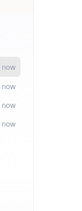
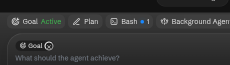
The elevation tone with the lit gradient seams kept.
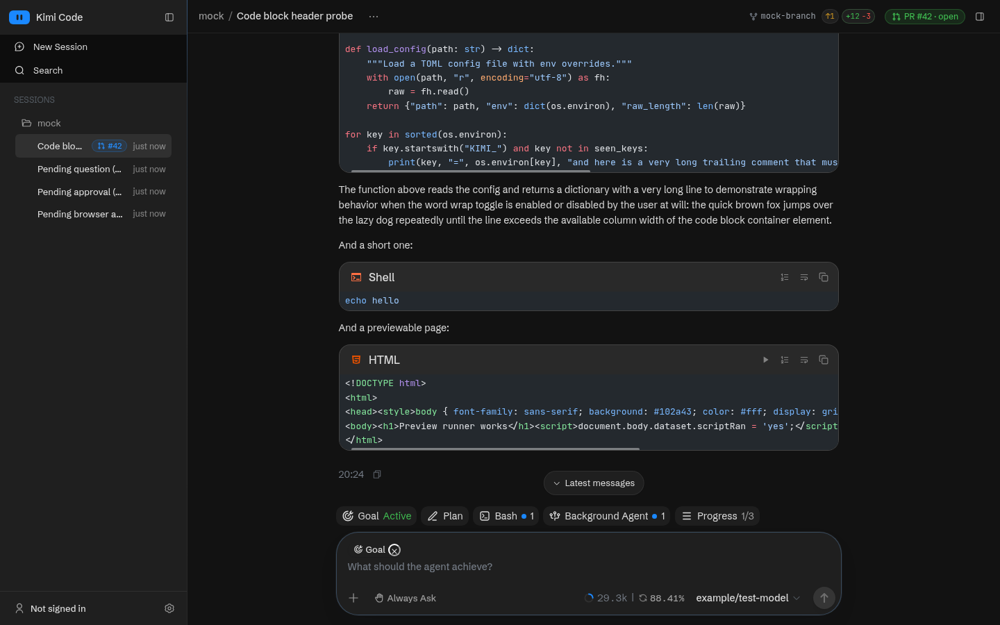
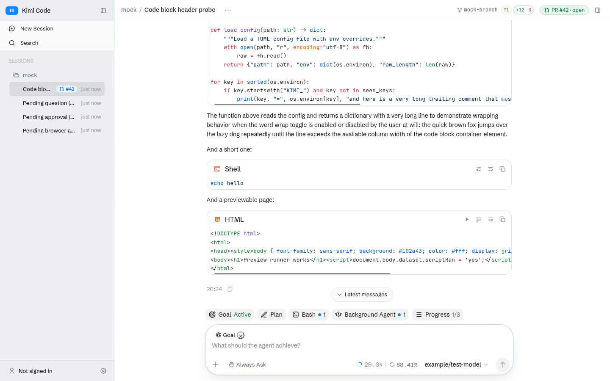
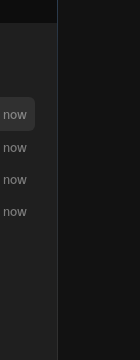
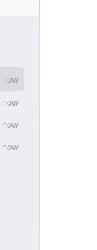
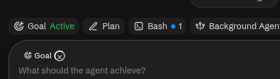

What happens where the message list meets the header and the dock.
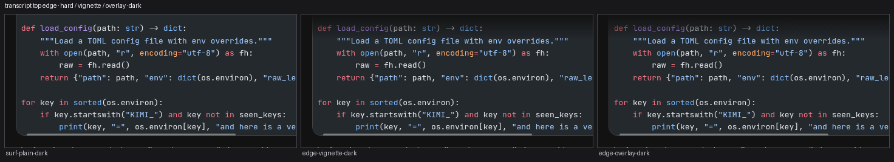
The scroller clips at its own edge. Nothing is painted over the transcript.
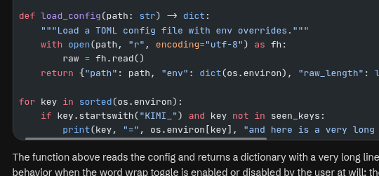
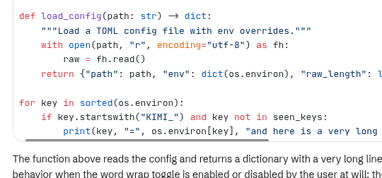
The scroller fades its own content out at both ends, through a mask. Nothing floats above it.
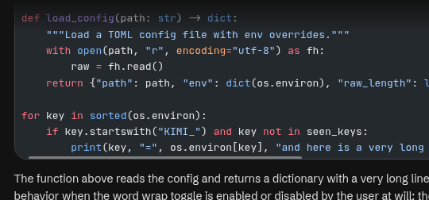
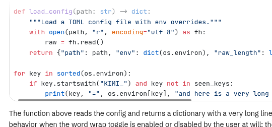
The chat header floats over the transcript and a painted veil fades content into the page colour before it reaches the bar. No filter.
Upstream's own menus, dock work panel and workbar chips carry a 24px backdrop blur. It is not part of the deleted system, so it survived. This switch decides whether it stays or the app has no filter left anywhere.
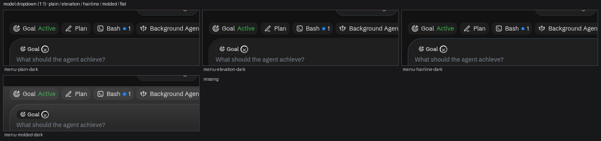
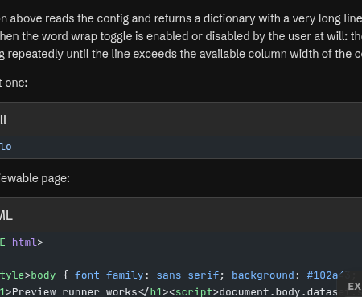
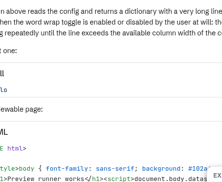
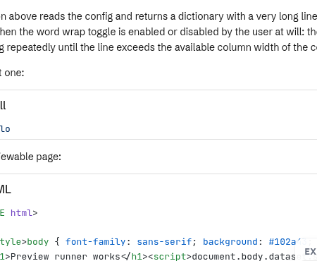
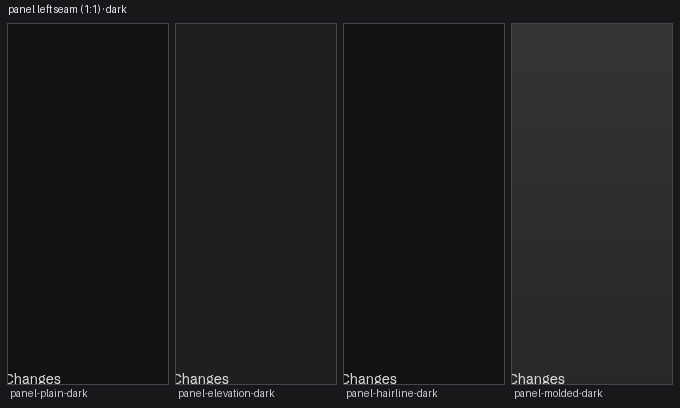